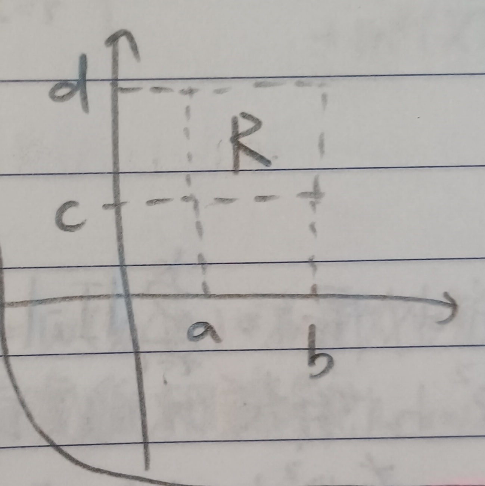
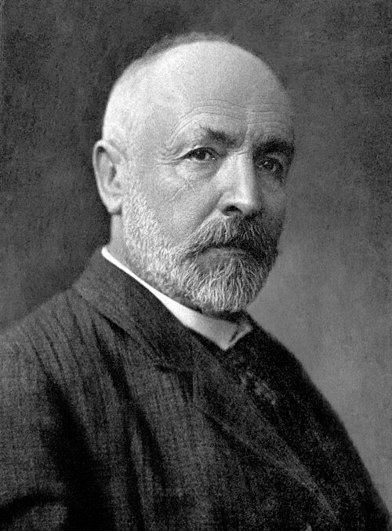

這份筆記是關於勒貝格測度的定義與性質。
勒貝格外測度
定義 1：區間的大小 (Size of Intervals)
對於\(\mathbb{R}\)上的開區間\((a,b)\)，我們定義其大小為 \[ |(a,b)|=b-a \]
定義 2：\(\mathbb{R}\)上的勒貝格外測度 (Lebesgue Outer Measure on \(\mathbb{R}\))
給定集合\(A\subseteq\mathbb{R}\)，我們將其勒貝格外測度定義為 \[ m^\ast(A)=\inf\left\{\sum_{k=1}^\infty|I_k|:A\subseteq\bigcup_{k=1}^\infty I_k,\;I_k\mbox{ are open intervals on }\mathbb{R}\right\} \] 若\(\sum\limits_{k=1}^\infty|I_k|\)總是發散，則記\(m^\ast(A)=\infty\)。
性質 2-1
\[ m^\ast(\varnothing)=0 \]
證明：對於所有\(\epsilon>0\), \(a\in\mathbb{R}\)，都有\(\varnothing\subseteq(a-\epsilon,a+\epsilon)\)，故 \[ m^\ast(\varnothing)\leq 2\epsilon \] 這對任意小的\(\epsilon>0\)都成立，故\(m^\ast(\varnothing)=0\)。QED
性質 2-2：勒貝格外測度的單調性 (Monotonocity of Lebesgue Outer Measure)
給定集合\(A,B\subseteq\mathbb{R}\)。若\(A\subseteq B\)，則\(m^\ast(A)\leq m^\ast(B)\)。
證明：對於一個\(B\)的開區間覆蓋\(\{I_k\}_{k=1}^\infty\)，我們總是有 \[ A\subseteq B\subseteq \bigcup_{k=1}^\infty I_k \] 故由定義有 \[ m^\ast(A)\leq\sum_{k=1}^\infty|I_k| \] 故有 \[ m^\ast(A)\leq\inf\left\{\sum_{k=1}^\infty|I_k|\right\}=m^\ast(B) \] QED
性質 2-3：勒貝格外測度的次可加性 (Subadditivity of Lebesgue Outer Measure)
給定\(\mathbb{R}\)上的集族\(\{A_i\}_{i=1}^\infty\)且對於所有\(i\in\mathbb{N}\)都有\(m^\ast(A_i)<\infty\)，則我們有 \[ m^\ast\left(\bigcup_{i=1}^\infty A_i\right)\leq\sum_{i=1}^\infty m^\ast(A_i) \]
證明：給定\(\epsilon>0\)，對於\(i\in\mathbb{N}\)，由定義知可以選定\(A_i\)的開區間覆蓋\(\left\{I^i_k\right\}_{k=1}^\infty\)使得 \[ \sum_{k=1}^\infty\left|I_k^i\right|\leq m^\ast(A_i)+\frac{\epsilon}{2^i}, A_i\subseteq\bigcup_{k=1}^\infty I_k^i \] 故有 \[ \bigcup_{i=1}^\infty A_i\subseteq \bigcup_{i=1}^\infty\bigcup_{k=1}^\infty I_k^i \] 於是有 \[ \begin{aligned} m^\ast\left(\bigcup_{i=1}^\infty A_i\right)&\leq\sum_{i=1}^\infty\sum_{k=1}^\infty\left|I_k^i\right|\\ &\leq\sum_{i=1}^\infty \left[m^\ast(A_i)+\frac{\epsilon}{2^i}\right]\\ &=\sum_{i=1}^\infty m^\ast(A_i)+\epsilon \end{aligned} \] 這對所有\(\epsilon>0\)都成立，故 \[ m^\ast\left(\bigcup_{i=1}^\infty A_i\right)\leq\sum_{i=1}^\infty m^\ast(A_i) \] QED
定義 2-4：\(\mathbb{R}^n\)上的勒貝格外測度 (Lebesgue Outer Measure on \(\mathbb{R}^n\))
在\(\mathbb{R}^2\)中，考慮如下圖1的開矩形\(R=(a,b)\times(c,d)\)，定義\(R\)的大小為 \[ |R|=(b-a)\cdot(d-c) \]
我們稱這樣的矩形為開矩形 (Open Rectangle)，我們即將\(A\subseteq\mathbb{R}^2\)的勒貝格外測度定義為 \[ m^\ast(A)=\inf\left\{\sum_{k=1}^\infty|R_k|:A\subseteq\bigcup_{k=1}^\infty R_k, R_k\mbox{ are open rectangles on }\mathbb{R}^2\right\} \] 類似的，我們可以定義\(\mathbb{R}^n\)上的「開矩形」的大小為 \[ B=\prod_{i=1}^n|b_i-a_i| \] 並可以類似的定義\(\mathbb{R}^n\)上的勒貝格外測度。於是，我們即定義了\(\mathbb{R}^n\)上的任何集合的勒貝格外測度。
定義 3：零集合 (Zero Set)
若一集合\(Z\subseteq\mathbb{R}^n\)滿足\(m^\ast(Z)=0\)，則稱\(Z\)是零集合。
性質 3-1
零集合的子集也是零集合。
證明：這可以直接由性質2-2得到。QED
性質 3-2
若集族\(\{A_i\}_{i=1}^\infty\)中都是零集合，則
\[
A=\bigcup_{i=1}^\infty A_i
\] 也是零集合。
證明：這可以直接由性質2-3得到。QED
例 3-3
給定\(a\in\mathbb{R}\)，令 \[
P_i(a)=\{(x_1,x_2,\cdots,x_{i-1},a,x_{i+1},\cdots,x_n)\in\mathbb{R}^n:x_j\in\mathbb{R},
\forall j\neq i\}\subseteq\mathbb{R}^n
\] 則\(P_i(a)\)是\(\mathbb{R}^n\)中的零集合。
證明：給定\(\epsilon>0\)，考慮\(\mathbb{R}^n\)上的開矩形 \[ R_k=(k,k+1)\times(k,k+1)\times\cdots\times(k,k+1)\times\underbrace{\left(a-\frac{\epsilon}{2^{|k|+1}},a+\frac{\epsilon}{2^{|k|+1}}\right)}_{\mbox{(★)}}\times(k,k+1)\times\cdots\times(k,k+1) \] 其中\(k\in\mathbb{Z}\)，且(★)是第\(i\)位。顯然有 \[ P_i(a)=\bigcup_{k=-\infty}^\infty R_k \] 故由定義有 \[ m^\ast(P_i(a))\leq\sum_{k=-\infty}^\infty |R_k|=\sum_{k=-\infty}^\infty\frac{\epsilon}{2^{|k|}}=3\epsilon \] 這對於任意小的\(\epsilon\)都成立，故\(P_i(a)\)是\(\mathbb{R}^n\)中的零集合。QED
例 3-4
有理數集\(\mathbb{Q}\)是\(\mathbb{R}\)中的零集合。
證明：由於\(\mathbb{Q}\)是可數集(見這裡的例2-3)，故我們可以將所有有理數進行編號，即 \[ \mathbb{Q}=\{q_1,q_2,q_3,\cdots\}=\{q_n\}_{n=1}^\infty \] 於是，對於\(\epsilon>0\)，可以考慮開區間 \[ I_n=\left(q_n-\frac{\epsilon}{2^{n+1}},q_n+\frac{\epsilon}{2^{n+1}}\right) \] 顯然有 \[ \mathbb{Q}\subseteq\bigcup_{n=1}^\infty I_n \] 故由定義有 \[ m^\ast(\mathbb{Q})\leq\sum_{n=1}^\infty|I_n|=\sum_{n=1}^\infty\frac{\epsilon}{2^n}=\epsilon \] 這對任意小的\(\epsilon>0\)都成立，故\(\mathbb{Q}\)是\(\mathbb{R}\)中的零集合。QED
例 3-5：康托集 (Cantor Set)
考慮\(I_0=[0,1]\in\mathbb{R}\)。我們去掉該區間中間\(1/3\)的部分，即\((1/3,2/3)\)，我們就剩下 \[ I_1=\left[0,\frac{1}{3}\right]\cup\left[\frac{2}{3},1\right] \] 再把\(I_1\)中兩個區間的中間\(1/3\)的部份去掉，我們就剩下 \[ I_2=\left[0,\frac{1}{9}\right]\cup\left[\frac{2}{9},\frac{1}{3}\right]\cup\left[\frac{2}{3},\frac{7}{9}\right]\cup\left[\frac{8}{9},1\right] \] 如此重複無限多次，最後還留下來的點集我們稱作康托集，記做\(C\)。這個建構康托集的步驟可以參考下圖2。
顯然對於\(n\geq 0\)會有 \[ |I_n|=\frac{2^n}{3^n} \] 而對於所有\(n\geq 0\)都會有\(C\subseteq I_n\) i.e. \(m^\ast(C)\leq |I_n|\)，而\(n\)任意大時\((2/3)^n\)又可以任意小，故\(C\)是\(\mathbb{R}\)中的零集合。
定理 4
給定\(I=[a,b]\subseteq\mathbb{R}\)，則\(m^\ast(I)=b-a\)。
證明：給定\(\epsilon>0\)，考慮 \[ I\subseteq\left(a-\frac{\epsilon}{2},b+\frac{\epsilon}{2}\right) \] 於是對於所有\(\epsilon>0\)有 \[ m^\ast(I)\leq b-a+\epsilon \] 即\(m^\ast(I)\leq b-a\)。